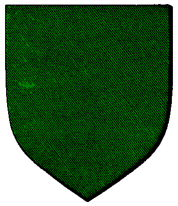

| Übersicht,
Anschläge und Stammtisch (RPG) |
|
Freie Wahlen in Waldbrück
|
| Ardán Schwarzauge (RIP) |
Da sich das öffentliche Interesse in hohem Maße auf die Ausrichtung freier Wahlen in Bethana gerichtet hat, möchte ich nicht vergessen, die Frage nach der Ausrichtung freier Wahlen in Waldbrück zu stellen.
Für all jene Scherbenbewohner, die nicht wissen, was es mit Waldbrück auf sich hat. Diese Stadt wurde nach der Zerstörung(!) Sakidaos (Anm. d Verf.: Sakidao war eine blühende Stadt mit über 200k Einwohner, die nach der Übernahme der Bürgermeistergeschäfte durch Tharsonius massiv geschrumpft ist und schließlich sogar vom eigenen Bürgermeister niedergebrannt wurde) durch Tharsonius südöstlich von dem alten Siedlungsplatz errichtet und ist nun durch vier Türme abgeriegelt. Die Ausrichtung freier Wahlen ist dort leider nicht möglich.
Daher möchte ich Greggg, als einen der Turmbesitzer bitten, den Zugang zur Stadt freizugeben.
Freiherr Ardán Fálmanôr von Nerôná,
Vorsteher von Dîn Nerôná,
Kardinal im Dienste des einzig wahren Glaubens an Bendur,
Mitglied des Hohen Rates und Gesandter der Stille,
Ehemann der reizenden Lyselle Duval
Zur 21. Stunde am 29.Dunkelfrost im Jahre 419 |
31.03.05 0:05
 |
|
| Tyxaro von Ingham (RIP) |
ich lese überall Frei...frei....das einzige was frei ist das man Umsonst den passierschein beantragen darf. Das ist wirklich noch Frei...
Tyxaro von Ingham,
Stellv. Nationsführer der Glorias Cognomen Ingham
Zur 21. Stunde am 29.Dunkelfrost im Jahre 419 |
31.03.05 0:06
|
|
| Xungarosch (RIP) |
Passierschein wurde soeben beantragt
Sir Xungarosch,
Vorsteher von Khogar´s Wizdom,
Hohepriester im Dienste des einzig wahren Glaubens an Urvan,
Hüter des Hains,
Sieger des ersten Scherbenturneys in der Disziplin Tjost,
Legionär Urvans
Zur 21. Stunde am 29.Dunkelfrost im Jahre 419 |
31.03.05 0:07
|
|
| Tyxaro von Ingham (RIP) |
*lacht sich kaputt*
Seht ihr...das mein ich.....*lacht*
Tyxaro von Ingham,
Stellv. Nationsführer der Glorias Cognomen Ingham
Zur 21. Stunde am 29.Dunkelfrost im Jahre 419 |
31.03.05 0:08
|
|
| Noemi Duval (RIP) |
*steht lachend vor dem anschlag*
... wo er recht hat ...
nun Ardán Fálmanôr von Nerôná, ich würde sagen von nichts kommt nichts ... einer muss shcon anfangen und da ihr offensichtlich der agressor seit, solltet ihr dieses wohl tun und den turm öffnen, dann läßt gregg sicher auch mit sich reden ...
und eure darstellung über sakidao ist wohl erstunken und erlogen, dass es bis zum himmel riecht ...
Baronesse Noemi Duval
Zur 22. Stunde am 29.Dunkelfrost im Jahre 419 |
31.03.05 0:11
|
|
| Saikidias (RIP) |
Ich beantrage hiermit einen Passierschein
Saikidias
Zur 22. Stunde am 29.Dunkelfrost im Jahre 419 |
31.03.05 0:13
|
|
| Middyn Faraldar (RIP) |
Noemi Duval,
Tatsache ist nunmal, dass Sakidoa einst eine blühende Stadt war und nun, 200.000 EInwohner weniger, dem Erdboden gleichgemacht wurde.
ich würde dann auch so einen passierschein beantragen ..
Baron Middyn Faraldar,
Vorsteher von Eremits Ruh
Zur 22. Stunde am 29.Dunkelfrost im Jahre 419 |
31.03.05 0:13
|
|
| Séraa Donas (RIP) |
Irgendwie werd ich den eindruck nicht los... dies hier erinnert mich an zwei Buben nach einer Prügelei, die vorm Lehrmeister stehen und der eine sagt: "der da macht aber doch auch..."
*schüttelt den kopf* ich würde ja gerne sagen: männer und ihre spiele... wobei ich fürchte, dass das leider nicht zu 100% zutrift.
Séraa Donas
Zur 22. Stunde am 29.Dunkelfrost im Jahre 419 |
31.03.05 0:14
|
|
| Senara (RIP) |
Hey Mausi möchte gern nen Passierschein um mal in Waldbrück wählen zu gehen
Senara
Zur 22. Stunde am 29.Dunkelfrost im Jahre 419 |
31.03.05 0:14
|
|
| Don Marco el Chorro (RIP) |
*Passierschein beantragen geht*
Don Marco el Chorro
Zur 22. Stunde am 29.Dunkelfrost im Jahre 419 |
31.03.05 0:15
|
|
| Cellanir Corondhal (RIP) |
Ich würde gerne in Waldbrück wählen gehen, Herr Pfalzgraf!
Cellanir Corondhal
Zur 22. Stunde am 29.Dunkelfrost im Jahre 419 |
31.03.05 0:16
|
|
| Enialis Xiloscient (RIP) |
Einen Passierschein für mich, ja?
Enialis Xiloscient
Zur 22. Stunde am 29.Dunkelfrost im Jahre 419 |
31.03.05 0:16
|
|
Tarik Laertes
  |
In Bethana in der Taverne ist der Alkohol ausgegangen. Ich würde daher gerne in Waldbrück weitertrinken.
Tarik Laertes
Zur 22. Stunde am 29.Dunkelfrost im Jahre 419 |
31.03.05 0:17
|
|
| Mordow (RIP) |
Einen Passierschein wollte ich auch schon immer mal haben. Betse Gelegenheit wohl hier.
*Passierschein beantrag*
Pfalzgraf Mordow,
Vorsteher von Lager Süd,
Anführer der glorreichen Nation "Ritter Esturiens",
Verlobter der reizenden Zorra
Zur 22. Stunde am 29.Dunkelfrost im Jahre 419 |
31.03.05 0:17
|
|
| Crom van de Gârtenzwôrg (RIP) |
ihr bekommt natürlich alle einen Passierschein, nach den Wahlen.^^
Wieso soll es anders laufen als in Bethana?
Sir Crom van de Gârtenzwôrg,
Vorsteher von Gobel en airita Bendur,
Priester im Dienste des einzig wahren Glaubens an Pheron
Zur 22. Stunde am 29.Dunkelfrost im Jahre 419 |
31.03.05 0:17
|
|
| Séraa Donas (RIP) |
*kehrt nochmal zurück* da fällt mir ein... machen wir es doch so, wie es offenbar bei bethana ist...
ein tag vor Wahlende dürfen offiziell die passierscheine beantragt werden und werden dann mit der selben geschwindigkeit ausgeteilt wie bei bethana *schmunzelt* das wäre doch gerecht, oder nicht? *lachen muss*
Séraa Donas
Zur 22. Stunde am 29.Dunkelfrost im Jahre 419 |
31.03.05 0:18
|
|
| Arcadia Fuin-Ithil (RIP) |
Einen Passierschein bitte
Arcanus Fuin-Ithil
Zur 22. Stunde am 29.Dunkelfrost im Jahre 419 |
31.03.05 0:18
|
|
| Noemi Duval (RIP) |
ja, das ist eine tatsache, sie war es wohlgemerkt war ... lest die darstellungen des ehrenwerten tharonius und dann wißt ihr, was los war ... ich werde diese des weiteren gerne bestätigen ... wie war das doch: wenn man keine ahnung hat, sollte man lieber einmal den mund halten, anstatt sich vor aller scherbe der lächerlichkeit preiszugeben ...
ich weiß, ich weiß ... wer glaubt schon einer kaperfahrerin ... dazu noch mit solchen freunden ... *die hände vor den kopf schlägt und ihre rumflasche sucht*
Baronesse Noemi Duval
Zur 22. Stunde am 29.Dunkelfrost im Jahre 419 |
31.03.05 0:19
|
|
| Cwlvyn ab Dhwron (RIP) |
ich beantrage hiermit einen Passierschein *lacht*
Sir Amorous Meara
Zur 22. Stunde am 29.Dunkelfrost im Jahre 419 |
31.03.05 0:21
|
|
Cadacan von Tacheless
  |
passierschein wurde beantragt
Freiherr Cadacan von Tacheless,
Vorsteher von Burg Hohenstaufen,
Hohepriester im Dienste des einzig wahren Glaubens an Pheron,
Verteidigungsministerchen,
Ehemann der reizenden Sara von Tacheless
Zur 23. Stunde am 29.Dunkelfrost im Jahre 419 |
31.03.05 0:25
|
|
| Ylva Muriell Laoghaire (RIP) |
Ich möchte auch einen Passierschein!
Ylva Muriell Laoghaire,
Verlobte des ehrenwerten Kjetil
Zur 23. Stunde am 29.Dunkelfrost im Jahre 419 |
31.03.05 0:30
|
|
| Black Jack (RIP) |
Huch, da scheint´s was umsonst zu geben,
dann darf ich natürlich da nicht fehlen!
Ich bitte ebenfalls um einen Passierschein.
Pfalzgraf Black Jack,
Vorsteher von Tempel der Götter,
Anführer der glorreichen Nation "religio immortale ALVERAN",
Protektor ALVERANS
Zur 23. Stunde am 29.Dunkelfrost im Jahre 419 |
31.03.05 0:32
|
|
| Hannes Ge Laber (RIP) |
Passierschein beantragt
Roar Ljøkelsoey
Zur 23. Stunde am 29.Dunkelfrost im Jahre 419 |
31.03.05 0:32
|
|
| Dagorineth (RIP) |
Habe soeben auch einen Passierschein beantragt bei dem werten greggg.
Dagorineth,
Hohepriesterin im Dienste des einzig wahren Glaubens an Urvan
Zur 23. Stunde am 29.Dunkelfrost im Jahre 419 |
31.03.05 0:34
|
|
| Fáin Cortez (RIP) |
Passierschein beantragt
Markgraf Fáin Senémis,
Vorsteher von Val ti Amo,
Hüter des Chaos,
Aussenminister der Ritter Esturiens
Zur 23. Stunde am 29.Dunkelfrost im Jahre 419 |
31.03.05 0:35
|
|
| Shâna Carnesîr (RIP) |
<kommt auf dem Marktplatz vorbei, sieht viele Leute, schiebt sich nach vorne, liest>
Gute Idee!
Ich bitte hiermit ebenfalls um einen Passagierschein!
Mal sehen, wen ich alles vor Ort treffen werde
<macht sich wieder grinsend von dannen>
Shâna Carnesîr
Zur 23. Stunde am 29.Dunkelfrost im Jahre 419 |
31.03.05 0:35
|
|
VitaminC
  |
Passierschein wurde soeben beantragt.
Baron VitaminC,
Vorsteher von Tor des Nordens,
Anführer der glorreichen Nation "Rebellen der Freiheit",
Ehemann der reizenden Alessa Imret Greenleaf
Zur 23. Stunde am 29.Dunkelfrost im Jahre 419 |
31.03.05 0:35
|
|
| Andragon Elrohir (RIP) |
Wenn es eien freie Stadt ist, dann sollte einfach jedem Scherbenbewohner ein Passierschein ausgestellt werden, ohne erst Anträge stellen zu müssen!
Sir Andragon Elrohir,
Vorsteher von Bor Col Casir,
Kardinal im Dienste des einzig wahren Glaubens an Urvan,
Stimme der Drachen
Verkünder des Glaubens an Urvan
Zur 23. Stunde am 29.Dunkelfrost im Jahre 419 |
31.03.05 0:37
|
|
| Aset Kestrel (RIP) |
Passierschein hiermit beantragt.
Baron Tiran Falkenauge,
Vorsteher von NipTown
Zur 23. Stunde am 29.Dunkelfrost im Jahre 419 |
31.03.05 0:38
|
|
| Middyn Faraldar (RIP) |
Die Stadt ist aber leider derzeit nicht frei erreichbar.
Baron Middyn Faraldar,
Vorsteher von Eremits Ruh
Zur 23. Stunde am 29.Dunkelfrost im Jahre 419 |
31.03.05 0:38
|
|
Zadar
 |
Ich beantrage ebenfalls einen Passierschein!
Freiherr Zadar,
Vorsteher von Thinôdês,
Moladh do Taoch Istigh
Zur 24. Stunde am 29.Dunkelfrost im Jahre 419 |
31.03.05 0:39
|
|
| Tordhúr Dunkelschmied (RIP) |
Na wenns was umsonst gibt darf ein Zwerg nicht fehlen. Einen Passierschein bitte für mich und meine Gefährten! Und lasst mich mal nach vorne, ich sehe ja gar nichts mehr!
Freiherr Tordhúr Dunkelschmied,
Vorsteher von Butterwiese,
Präfekt der Provinzen auf Kontinent Loh
Zur 24. Stunde am 29.Dunkelfrost im Jahre 419 |
31.03.05 0:40
|
|
| Leandran (RIP) |
Um kein Risiko einzugehen werde ich als Geleitschutz meiner Lehin mit nach Kyll kommen und beantrage hiermit ebenfalls einen Passierschein.
Sir Leandran
Zur 24. Stunde am 29.Dunkelfrost im Jahre 419 |
31.03.05 0:43
|
|
| Ogrim Doomhammer (RIP) |
Ich beantrage ebenfalls einen Passierschein.
Sir Ogrim Doomhammer,
Kardinal im Dienste des einzig wahren Glaubens an Pheron,
Anführer der glorreichen Nation "Corro de la Liberta",
Ehemann der reizenden Bithya
Zur 24. Stunde am 29.Dunkelfrost im Jahre 419 |
31.03.05 0:44
|
|
| Praktikant (RIP) |
beantrage ebenfalls hier mit einen Passierschein
Sir Praktikant,
Vorsteher von Amon Amdir,
Anführer der glorreichen Nation "army of slaves"
Zur 24. Stunde am 29.Dunkelfrost im Jahre 419 |
31.03.05 0:46
|
|
| Inis Vitrin von Xanthias (RIP) |
ich auch
Freifrau Inis Vitrin
Zur 24. Stunde am 29.Dunkelfrost im Jahre 419 |
31.03.05 0:48
|
|
| Asry Rustmoon (RIP) |
Habe auch soeben meinen Passierschein beantragt!
Sir Asry Rustmoon,
Vorsteher von Esturia Externa,
Ehemann der reizenden Ghanima Shai-Hulud
Zur 1. Stunde am 30.Dunkelfrost im Jahre 419 |
31.03.05 0:57
|
|
| Sunka (RIP) |
Ich beantrage ebenfalls einen Passierschein.
Amrod Celahir
Zur 1. Stunde am 30.Dunkelfrost im Jahre 419 |
31.03.05 1:01
|
|
Stryke
 |
habe auch eben beantragt
Stryke,
Kardinal im Dienste des einzig wahren Glaubens an Urvan
Zur 1. Stunde am 30.Dunkelfrost im Jahre 419 |
31.03.05 1:02
|
|
| Tiramon côn Hônor v. Tacheless (RIP) |
Ich beantrage dann natürlich auch einen
*lächelt*
Tiramon von Tacheless,
Kardinal im Dienste des einzig wahren Glaubens an Pheron,
Legionär Pherons,
scheffelnder Legionär
Zur 1. Stunde am 30.Dunkelfrost im Jahre 419 |
31.03.05 1:06
|
|
| Beltan Varkhil (RIP) |
ich würde auch so gern einen Passierschein bekommen!!
Sir Beltan,
Ratsmitglied und Heermeister der Stille,
Verlobter der reizenden Sindra von Hexenhain
Zur 2. Stunde am 30.Dunkelfrost im Jahre 419 |
31.03.05 1:11
|
|
| Käptn Quire (RIP) |
also wenn alle einen bekommen haette ich auch gerne einen, danke
Sir Käptn Quire,
Vorsteher von Skryll
Zur 2. Stunde am 30.Dunkelfrost im Jahre 419 |
31.03.05 1:13
|
|
| Aarés Donas (RIP) |
*schüttelt nur den kopf*
Sir Aarés Donas,
Anführer der glorreichen Nation "Donas"
Zur 2. Stunde am 30.Dunkelfrost im Jahre 419 |
31.03.05 1:17
|
|
| Leonhardt von Dracostein (RIP) |
will auch wählen gehen Bitte Passierschein :-)
Cathan,
Hohepriester im Dienste des einzig wahren Glaubens an Bendur
Zur 2. Stunde am 30.Dunkelfrost im Jahre 419 |
31.03.05 1:19
|
|
| Zeuss (RIP) |
will auch wählen, Bitte passierchein, habe noch einige PP die ich verwählen kann und 5 K AP ich warte
Baron Zeuss,
Vorsteher von Lukanien
Zur 3. Stunde am 30.Dunkelfrost im Jahre 419 |
31.03.05 1:23
|
|
| Brendan (RIP) |
Passierscheine und Wahlkarten für meine Kaperfahrer und mich, bitte!
Sir Brendan,
Anführer der glorreichen Nation "Bruderschaft der Kaperfahrer",
Kapitän des Schnellseglers "Hooker",
Lieber tot - als ein Laot
Zur 3. Stunde am 30.Dunkelfrost im Jahre 419 |
31.03.05 1:23
|
|
| Gwendolyn (RIP) |
Passierscheine für mich und meine Chaoten bitte! Im Saufen sind wir gut!
Markgräfin Gwendolyn,
Vorsteherin von Holzkopfbucht,
Anführerin der glorreichen Nation "Freie Union Chaotischer Kumpel",
Verlobte des ehrenwerten Lucien de Lacroix
Zur 3. Stunde am 30.Dunkelfrost im Jahre 419 |
31.03.05 1:29
|
|
| Derberin De Vaneel (RIP) |
bei freien wahlen darf ich doch nicht fehlen, die haben wir doch so selten *hrr hrr*
Bitte einen passierschein für mich
Derberin De Vaneel
Zur 5. Stunde am 30.Dunkelfrost im Jahre 419 |
31.03.05 1:53
|
|
| Rarion Gathien (RIP) |
für mich bitte auch einen passierschein
Sir Rarion Gathien
Zur 6. Stunde am 30.Dunkelfrost im Jahre 419 |
31.03.05 2:04
|
|
| Agradas Selar (RIP) |
Passierschein beantragt.
Agradas Selar,
Kardinal im Dienste des einzig wahren Glaubens an Pheron,
Anerkannter Künstler der Scherbe
Zur 6. Stunde am 30.Dunkelfrost im Jahre 419 |
31.03.05 2:08
|
|
| eisenmann von Frankental (RIP) |
Auch mal in reihe anstell.
Graf eisenmann von Frankental,
Vorsteher von Frankonia,
Anführer der glorreichen Nation "Frankenreich",
Verlobter der reizenden Brunhilde
Zur 9. Stunde am 30.Dunkelfrost im Jahre 419 |
31.03.05 2:50
|
|
| elendril béliar (RIP) |
bei so netter Gesellschaft, darf ich da überhaupt fehlen?
Hiermit beantrage ich ebenfalls einen Schein!
Natürlich garantiere ich nicht für die Sicherheit der Wahlteilnehmer oder gar für deren Eigentum, aber seht es so, jeder der mir nicht passt, wird merken, dass er neben mir seine Stimme abgeben durfte
Sir elendril béliar
Zur 10. Stunde am 30.Dunkelfrost im Jahre 419 |
31.03.05 3:10
|
|
| Nemo van Delving (RIP) |
Schon mal mit "Turm öffnen" probiert? Spart ne Menge Papierkram
Sir Nemo van Delving,
Kapitän des Schnellseglers "Sloboda"
Zur 12. Stunde am 30.Dunkelfrost im Jahre 419 |
31.03.05 3:33
|
|
| Mia von Tacheless (RIP) |
oh... besser spät als nie! *passierschein für waldbrück anfordert*
Gräfin Mia von Tacheless,
Vorsteherin von Burg Tacheless,
Anführerin der glorreichen Nation "Schwingen der Sieben",
Ministerialrätin für Seefahrt und Stadt
Zur 17. Stunde am 30.Dunkelfrost im Jahre 419 |
31.03.05 4:42
|
|
Roland von Gilead
  |
*auch mal Passierschein beantragen geht*
Freiherr Roland von Gilead,
Vorsteher von Puerto Pavitos
Zur 20. Stunde am 30.Dunkelfrost im Jahre 419 |
31.03.05 5:22
|
|
| Evalina von Tacheless (RIP) |
*hat sich gerade ein passierschein beantragt*
Freifrau Evalina von Tacheless,
Vorsteherin von Arcadia
Zur 20. Stunde am 30.Dunkelfrost im Jahre 419 |
31.03.05 5:29
|
|
| Edorian (RIP) |
Was ein Ansturm von Leuten, da darf ich nicht fehlen, ich hätte auch gern einen Passierschein.
Graf Edorian,
Vorsteher von Amoris Place,
Anführer der glorreichen Nation "Orden des Lichts"
Zur 20. Stunde am 30.Dunkelfrost im Jahre 419 |
31.03.05 5:31
|
|
| Eran von Aibheisgârd (RIP) |
Ich hätte ach gerne einen Passierschein, danke.
Und wenn´s geht eine Wahlkabine etwas weiter entfernt von elendril béliars...
;)
Eran,
Hohepriester im Dienste des einzig wahren Glaubens an Bendur
Zur 1. Stunde am 31.Dunkelfrost im Jahre 419 |
31.03.05 6:32
|
|
| Negus (RIP) |
Da die Wahl, sich in Waldbrück noch nicht dem Ende zuneigt, beantragen wir auch hier einen Passierschein, um auch unseren kleinen Beitrag zu leisten.
Markgraf Negus,
Vorsteher von Chrestotes
Zur 1. Stunde am 31.Dunkelfrost im Jahre 419 |
31.03.05 6:33
|
|
| Lother dê Namâr (RIP) |
Also so nen Zettel hät ich auch gerne, oder muss ich den von einem anderen nehmen? *grüblt* Dürfte schwierig werden.
Bruno Meersalz
Zur 1. Stunde am 31.Dunkelfrost im Jahre 419 |
31.03.05 6:33
|
|
| Don Zeno (RIP) |
Naja, da will ich doch nicht fehlen...*Passage beantragt*
Baron Don Zeno,
Anführer der glorreichen Nation "Sundown"
Zur 6. Stunde am 31.Dunkelfrost im Jahre 419 |
31.03.05 7:52
|
|
| Asmodis (RIP) |
Ach, bissi saufen? Wär mal was *meld und Passierschein beantrag*
Pfalzgraf Tilokh Araxes,
Vorsteher von Zwillingsfels,
Moladh an Cogadh
Zur 7. Stunde am 31.Dunkelfrost im Jahre 419 |
31.03.05 8:01
|
|
| Gnarf Meara (RIP) |
Habe auch Antrag auf Passierschein gestellt.
Markgraf Athlan,
Vorsteher von Lothia
Zur 9. Stunde am 31.Dunkelfrost im Jahre 419 |
31.03.05 8:32
|
|
| Blueray ô Nelýa (RIP) |
Ich beantrage auch einen Passierschrein
BLueray
Zur 9. Stunde am 31.Dunkelfrost im Jahre 419
Blueray
Zur 10. Stunde am 31.Dunkelfrost im Jahre 419 |
31.03.05 8:40
|
|
| Drakan Korin (RIP) |
Da hätte ich auch gern einen Passierschein...
Ich warte!!!
Drakan Korin,
Priester im Dienste des einzig wahren Glaubens an Pheron,
Dummschwätzer Valian´s
Zur 15. Stunde am 31.Dunkelfrost im Jahre 419 |
31.03.05 9:56
|
|
| Wooti Sikaryan (RIP) |
hab keinen bekommen ... und damit kann man doch schwimmen reiten usw wurde mir versprochen ... die sollten wie "ob" sein ... ich weis zwar nicht was das ist aber eine frau, deren namen ich nicht nennen will hatte mir soviel davon berichtet das ich das doch ausmal ausprobieren wollte ...
Baron Wooti Sikaryan
Zur 21. Stunde am 31.Dunkelfrost im Jahre 419 |
31.03.05 11:18
|
|
Custos von Dignitas
 |
Passierschein wurde beantragt
Custos von Dignitas,
Priester im Dienste des einzig wahren Glaubens an Urvan
Zur 7. Stunde am 33.Dunkelfrost im Jahre 419 |
31.03.05 19:14
|
|
| Julian Schmidt (RIP) |
bitte mir auch einen
Sir Warstein
Zur 7. Stunde am 33.Dunkelfrost im Jahre 419 |
31.03.05 19:18
|
|
| Sakuretsu van Graufurt (RIP) |
Bei so vielen Bewerbern wäre es wirklich einfacher den Turm für alle offenzuhalten, aner wenn sich die halbe Scherbe mit Pasierscheinen rumquält, nehm ich natürlich auch einen.
Wo muss man sich eintragen um noch vor Wahlende einen Passierschein zu bekommen?
Sakuretsu van Graufurt,
Hohepriester im Dienste des einzig wahren Glaubens an Bendur
Zur 8. Stunde am 33.Dunkelfrost im Jahre 419 |
31.03.05 19:25
|
|
| Detscho (RIP) |
ich beantrage hiermit auch einen passierschein
Markgraf Detscho,
Vorsteher von Arx ars Nova,
Priester im Dienste des einzig wahren Glaubens an Pheron,
Handelsminister der Academia ars Arcana
Zur 9. Stunde am 33.Dunkelfrost im Jahre 419 |
31.03.05 19:35
|
|
| greg (RIP) |
Es gibt keine Passierscheine.
((http://www.scherbenwelten.de/kommnew.php?css=&kategorie=2&beitrag=59115))
Pfalzgraf greggg,
Vorsteher von Bethana,
Anführer der glorreichen Nation "Vertex Time Travellers"
Zur 21. Stunde am 33.Dunkelfrost im Jahre 419 |
31.03.05 21:57
|
|
| Fáin Cortez (RIP) |
Wenn ihr keine freien Wahlen eingesteht, warum sollte der Orden der Stille etwas derartiges tun?
MfG.
Markgraf Fáin Senémis,
Vorsteher von Val ti Amo,
Hüter des Chaos,
Aussenminister der Ritter Esturiens
Zur 23. Stunde am 33.Dunkelfrost im Jahre 419 |
31.03.05 22:33
|
|
| kiraa (RIP) |
weil der orden der stile diese grossspurig versprochen hat!!
Lady kiraa
Zur 24. Stunde am 33.Dunkelfrost im Jahre 419 |
31.03.05 22:40
|
|
| Séraa Donas (RIP) |
Der Anführer des Orden der Stille sprach zumindest davon, dass die Wahlen in Bethana frei seien... eigentlich ja eine Lüge...hm...
Séraa Donas
Zur 24. Stunde am 33.Dunkelfrost im Jahre 419 |
31.03.05 22:41
|
|
| Agradas Selar (RIP) |
Nun, wenn man das freie Scherbenvolk zu einer Wahl läd sollte dieses auch in die Stadt gelassen werden.
Es zeugt nicht gerade von Ehre wenn man weit gereiste Wahlgäste dann vor verschlossenen Toren stehen lässt.
Agradas Selar,
Kardinal im Dienste des einzig wahren Glaubens an Pheron,
Anerkannter Künstler der Scherbe
Zur 24. Stunde am 34.Dunkelfrost im Jahre 419 |
31.03.05 22:47
|
|
| Fáin Cortez (RIP) |
Die Wahlen waren doch frei, ich hätte dort Wählen gehen können, viele Esturier und Laochs waren auch wählen, ich weiss nicht wo das Problem ist. Man musste halt nur die richtigen Freunde haben, aber ansonsten war die Wahl frei, doch, sehe ich keine Lüge drin.
MfG.
Markgraf Fáin Senémis,
Vorsteher von Val ti Amo,
Hüter des Chaos,
Aussenminister der Ritter Esturiens
Zur 1. Stunde am 34.Dunkelfrost im Jahre 419 |
31.03.05 22:48
|
|
| Dimiona Reshemin von Borbra (RIP) |
die Wahlen waren nicht frei - da das Gebiet auf dem sie stattfanden weder den Laoch, noch den RE oder dem OdS gehören.
Gerade ihr kandiert hier in diesem Rahmen immer das in eurer Grafschaft kein fremdes Recht anerkannt wird - warum sollten es andere unabhänige Nationen handhaben.
Die Wahl in Waldbrück ist eine Sache der VTT und sonst keiner anderen Nation
Lady Dimiona Reshemin von Borbra
Zur 1. Stunde am 34.Dunkelfrost im Jahre 419 |
31.03.05 22:57
|
|
| Fáin Cortez (RIP) |
Warum die Wahlen dort geführt wurden?
Weil besagte drei Nationen es konnten, deshalb.
Und wenn besagte drei Nationen in Waldbrück wählen wollen, dann werden sie es auch da tun...
Weil sie es können.
MfG.
Markgraf Fáin Senémis,
Vorsteher von Val ti Amo,
Hüter des Chaos,
Aussenminister der Ritter Esturiens
Zur 1. Stunde am 34.Dunkelfrost im Jahre 419 |
31.03.05 23:00
|
|
| Tiramon côn Hônor v. Tacheless (RIP) |
Nunja jeder kann seine regeln aufstellen...aber wenn der andere sie nicht fürchtet weil hinter den regeln kein druck steht...sind die regeln rein gar nichts wert nur mal so...
Tiramon von Tacheless,
Kardinal im Dienste des einzig wahren Glaubens an Pheron,
Legionär Pherons,
scheffelnder Legionär
Zur 4. Stunde am 34.Dunkelfrost im Jahre 419 |
31.03.05 23:35
|
|
| Judith Tatekohomni (RIP) |
"Die Wahlen waren doch frei, ich hätte dort Wählen gehen können, viele Esturier und Laochs waren auch wählen, ich weiss nicht wo das Problem ist. Man musste halt nur die richtigen Freunde haben, aber ansonsten war die Wahl frei, doch, sehe ich keine Lüge drin"
Ja Du hättest wählen können Onkel Fáin...doch nicht wir anderen.
Das nennst du also frei, hauptsache Du
*enttäuscht schreibt*
Unter Freiheit verstehe ich etwas anderes, aber ich brauch dies sicherlich nicht zu definieren, denn jeder vernünftige Scherbenbewohner weiss dies selbst was es ist.
Caranethiriel von Hexenhain
Zur 5. Stunde am 34.Dunkelfrost im Jahre 419 |
31.03.05 23:55
|
|
| Fáin Cortez (RIP) |
Liebe Cara, du wirst hoffentlich verstehen, warum eben nicht jeder wählen gehen konnte.
MfG.
Markgraf Fáin Senémis,
Vorsteher von Val ti Amo,
Hüter des Chaos,
Aussenminister der Ritter Esturiens
Zur 7. Stunde am 34.Dunkelfrost im Jahre 419 |
01.04.05 0:20
|
|
| Sakuretsu van Graufurt (RIP) |
Ich weiß nicht recht doch sehe ich hier Fehler in der Interpretation der "freien Wahlen",
Jedem der die Stadt betritt, steht es frei zu, zu Wählen. Das die Stadt in der nunaber die Wahl läuft abgeriegelt ist und nur bedingt Leute durchlässt hat nichts mit "freien Wahlen" zu tun.
Noch viel Spaß beim Diskutieren,
Bendur mit Euch,
Sakuretsu van Graufurt,
Hohepriester im Dienste des einzig wahren Glaubens an Bendur
Zur 8. Stunde am 34.Dunkelfrost im Jahre 419 |
01.04.05 0:26
|
|
| Njaminjami Stoppelhoppser (RIP) |
mok mok mokkel di mok
Baronesse Iriana Silberklinge,
Vorsteherin von Strahlen des Diamantes
Zur 11. Stunde am 34.Dunkelfrost im Jahre 419 |
01.04.05 1:18
|
|
Übersicht,
Anschläge und Stammtisch (RPG)
|